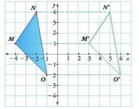
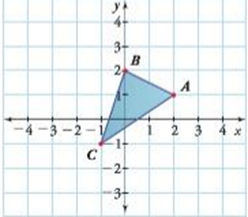

Traslación
Ejemplo
Los ejemplos son como mapas: si los sigues, el camino al aprendizaje se hace más fácil. 📚✨
Trasladar el ∆MNO, 7 unidades a la derecha.
Es importante observar que las ordenadas de los vértices permanecen igual. Por ejemplo, las ordenadas de los puntos M= (−4,1) N= (-2,4) y O= (-1,2); al realizar la traslación de 7 unidades a la derecha, sería: M'=(3,1), N'=(5,4) y O'=(6,-2)
Conceptualización
Lee cuidadosamente..
La traslación es una transformación que consiste en desplazar una figura a lo largo de una línea recta conservando la longitud de sus lados y la medida de sus ángulos. Para determinar la traslación de una figura es necesario indicar los tres elementos de una traslación:
- La dirección, que puede ser horizontal o vertical.
- El sentido que puede ser derecha, izquierda, arriba o abajo.
- La magnitud, que corresponde al número de unidades que se va a trasladar la figura.
Actividades
Las actividades son el entrenamiento que convierte el saber en poder. 💡✍️
Traslada el △ABC, de acuerdo con la dirección, el sentido y la magnitud que se indica. Luego, escribe en cada caso, los vértices de la posición final.
- Tres unidades hacia arriba.
- Dos unidades hacia la derecha.
- Cuatro unidades hacia la izquierda. Tres unidades hacia abajo.